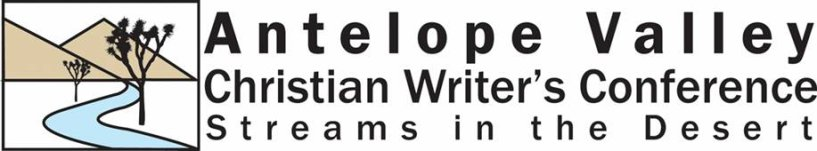

|
|

Streams in the Desert Writer's Conference
We had a very successful Writer's conference on May 5-6, featuring Alton Gansky, Ellie Kay, Dorothy Howell and Tanya Stowe.
Our Next Conference is scheduled for Friday and Saturday, May 4-5, 2007. Stay tuned for more details.
The Antelope Valley Christian Writer's Guild meets the second Tuesday of every month in the facilities of
Quartz Hill Community Church
43543 51st Street West
Quartz Hill, CA 93536
(Corner of 51st Street West and Avenue K)
Call 661-722-0891 if you have questions or email:
don@theology.edu
Copyright © Quartz Hill School of Theology.
All Rights Reserved.
Graphics by Art for the web